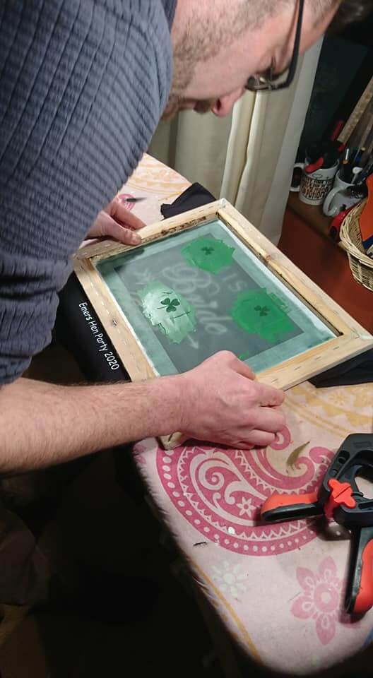

About Johnny:
Johnny is a guy.
Johnny is a guy who wears t-shirts.
One day, Johnny became a guy who makes t-shirts. On his ironing board.
Since that day, Johnny has been creating and designing original & personalised t-shirts and accessories. Using the method of screen printing, each product is crafted by hand in the Johnny the T-Shirt Guy workshop guaranteeing a unique piece every time.
Take a look at one of Johnny's featured designs below, head over to our shop to see more products or take a tour of our facilities.
